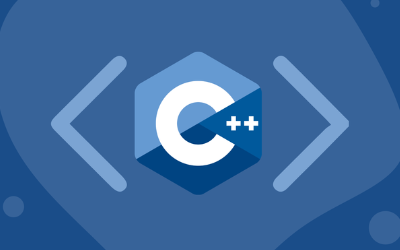

Apa Itu Bahasa Pemrograman C++ ?
Penulis : Nia Naniati
15 Juli, 2022
 Bahasa Pemrograman C++ adalah bahasa pemrograman komputer yang bisa dipakai untuk membuat berbagai aplikasi (general-purpose programming language), dan merupakan pengembangan dari bahasa pemrograman C.
Bahasa C++ kadang disebut juga sebagai “C with Classes“. Ini karena perbedaan paling utama antara bahasa C dan C++ ada di dukungan ke pemrograman berbasis object (object oriented programming). Bahasa C++ sudah mendukung pemrograman berbasis object, sedangkan bahasa C belum.
Karena termasuk general-purpose programming language, yakni bahasa pemrograman yang bisa membuat berbagai aplikasi, bahasa pemrograman C++ bisa dipakai untuk membuat aplikasi desktop seperti antivirus, software pengolah gambar (image processing), aplikasi pengolah kata (word processing), hingga untuk membuat compiler bahasa pemrograman lain
Bahasa pemrograman C++ dirintis sejak tahun 1979 oleh Bjarne Stroustrup, seorang ilmuwan komputer asal Denmark. Pengembangan bahasa C++ terinspirasi dari penelitian tesis Phd yang dulunya pernah dikerjakan Stroustrup. Pada saat itu, Stroustrup tertarik dengan bahasa Simula yang sangat mudah dipakai untuk pembuatan aplikasi skala besar.
Varian bahasa Simula, yakni Simula 67 dianggap sebagai bahasa pemrograman pertama yang menerapkan konsep pemrograman berbasis object. Akan tetapi bahasa Simula dianggap terlalu lambat untuk penggunaan sehari-hari. Di sisi lain ada juga bahasa BCPL yang sangat cepat tapi kurang cocok untuk pembuatan aplikasi besar.
Ketika bekerja di laboratorium perusahaan AT&T Bell Labs, Bjarne Stroustrup memiliki masalah di pengembangan sistem operasi UNIX. Pada saat itu ia teringat tesis yang dulu dikerjakan dan ingin menerapkannya ke dalam bahasa C. Pemilihan bahasa C karena sudah cukup populer dan juga di eksekusi dengan cepat. Apalagi sistem operasi UNIX juga dibuat menggunakan bahasa C.
Akhirnya pada tahun 1982 Bjarne Stroustrup mulai menambah fitur-fitur baru ke dalam bahasa C, terutama dukungan class agar bahasa C bisa menggunakan paradigma object oriented programming (pemrograman berbasis object). Stroustrup terinspirasi dari bahasa Simula dan juga bahasa pemrograman lain seperti ALGOL 68, Ada, CLU and ML.
Bahasa baru ini disebut sebagai C++ yang diambil dari operator increment ” ++ ” . Operator increment biasa di pakai dalam bahasa pemrograman untuk menaikkan nilai variabel sebanyak 1 angka. Dengan demikian C++ juga berarti sebuah penambahan dari bahasa C standar.
Pada tahun 1985, Bjarne Stroustrup membuat buku yang sangat terkenal berjudul C++ Programming Language. Buku ini menjadi referensi utama dan menjadi “standar tidak resmi” dari bahasa C++ pada saat itu. Pada tahun yang sama, dikembangkan pula compiler komersil C++ pertama.
Seiring perkembangan waktu, organisasi standar ISO secara resmi mengeluarkan standar C++98 pada tahun 1998, yang kemudian diikuti standar C++03 di tahun 2003. Setelah itu secara bergantian di rilis standar C++11 di tahun 2011, standar C++14 di tahun 2014 serta standar C++17 di tahun 2017.
Di akhir tahun 2020 ini di rencanakan rilis standar C++ 20. Untuk penggunaan dasar, perbedaan standar C++ ini tidak akan begitu terasa. Seharusnya tutorial belajar bahasa C++ di Duniailkom ini tetap bisa dipakai pada semua compiler C++.